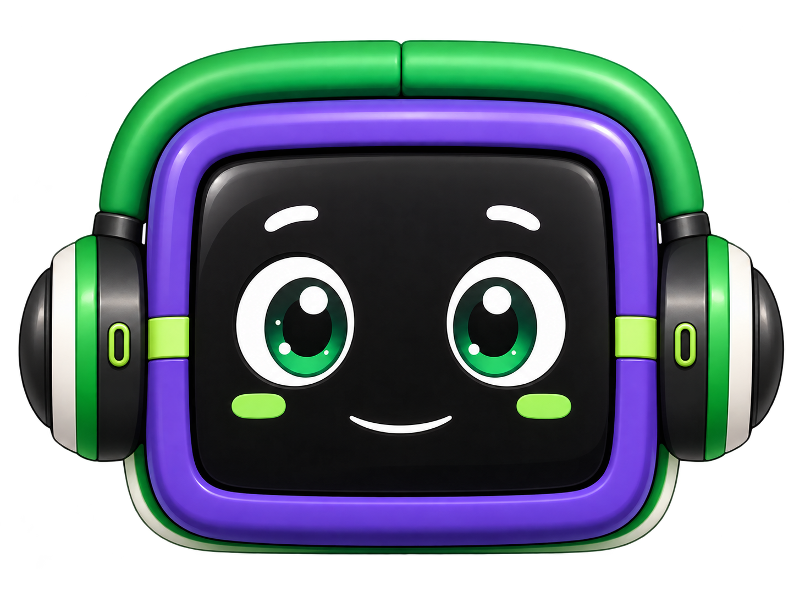

DUA + SENA + PLUS
El aprendizaje
se adapta a ti.
Una plataforma inteligente de accesibilidad universal que transforma la experiencia educativa según las necesidades de cada aprendiz.
¿Quieres verlo desde tu celular?
Escanea este QR para abrir esta presentación desde tu celular.
Preparando QR público…SENA
SENA · DUAS+
Accesibilidad
Adaptación en tiempo real
IA integradaAprender · acompañar · crear
Experiencia personalEl sistema se transforma
01 · EL PROBLEMANo es la persona la que debe adaptarse al sistema.
No es la persona la que debe adaptarse al sistema.
Es el sistema el que debe adaptarse a la persona.
Todos aprendemos de maneras diferentes. Cuando una plataforma no contempla esas diferencias, una barrera digital puede convertirse en una barrera educativa.
02 · COLOMBIA EN CIFRASLos datos también
Los datos también
cuentan historias.
No son solo números: muestran la dimensión de las barreras y por qué una experiencia educativa adaptable importa.
DANE · diferentes mediciones
1,76 — 3,1 M
La magnitud de la discapacidad en Colombia
1,76 M
3,1 M
Estimación inferior
Estimación superior
¿Por qué mostramos un rango?
Fuente: DANE · CNPV 2018 y documentos estadísticos
sobre medición de discapacidad.
Las cifras dependen de la operación estadística y de la metodología utilizada. Por eso presentamos el contexto de las mediciones en lugar de convertirlas en una única cifra.
CNPV 2018
74,5%
Asistencia a establecimientos educativos
74,5%
asistía
Asistía
Resto
Una parte importante de las personas que reportaron alguna limitación ya estaba vinculada al sistema educativo.
Fuente: DANE · CNPV 2018.
Ministerio de Educación
2026
Estudiantes con discapacidad matriculados
206.384
estudiantes
La matrícula evidencia que la inclusión educativa también necesita experiencias digitales accesibles.
Fuente: Ministerio de Educación Nacional · balance publicado en 2026.
CNPV 2018
DANE
Acceso a educación superior
9,04%
Mujeres con dificultades
VS
20,85%
Mujeres sin dificultades
Con dificultades
9,04%
Sin dificultades
20,85%
La diferencia muestra que el acceso al sistema no garantiza las mismas oportunidades educativas.
Fuente: DANE · CNPV 2018.03 · LA SOLUCIÓN
DUA + SENA + PLUS
DUAS+ integra accesibilidad, inteligencia artificial y experiencia humana desde el ADN de la plataforma.
01
DUA
Diseño Universal para el Aprendizaje: el contenido se adapta a las personas, no al revés.
02
SENA
Diseñada pensando en el contexto de formación, aprendices e instructores.
03
PLUS
IA, LAIA, accesibilidad multimodal y una experiencia digital que va más allá.
LAIA · 3D
↔ Arrastra para girar⌕ Rueda para zoom
Cargando modelo…
04 · CONOCE A LAIALa tecnología
La tecnología
también puede acompañar.
Ahora puedes explorar a LAIA en 3D. Arrastra el modelo para verlo desde diferentes ángulos y usa la rueda del mouse para acercarte.
VozSeñasChatCámaraIA
El modelo se carga directamente desde los archivos del proyecto. En celular podrás tocar y arrastrar para girarlo.
05 · ACCESO MULTIMODALIncluso entrar
Incluso entrar
puede ser diferente.
Cuatro formas de iniciar sesión para que el acceso también sea parte de la inclusión.
Acceso por voz
“Mi voz es mi llave”.
MultimodalPatrón visual
Toca puntos específicos sobre una imagen.
VisualCódigo por correo
OTP de 6 dígitos sin recordar contraseñas.
SimpleModo clásico
Correo, contraseña y rol.
Tradicional06 · PARA INSTRUCTORESLa accesibilidad
La accesibilidad
también se enseña.
El instructor puede gestionar aprendices, crear clases, analizar contenidos y experimentar cómo cambia la plataforma para cada perfil.
✓ Mis aprendices✓ Fichas y clases✓ Estadísticas✓ IA para contenido accesible✓ Experiencia DUAS+
Experiencia DUAS+● EN VIVO
VisualTDAHTEADislexia
Aa
Así podría ver la plataforma un aprendiz
El instructor puede comprobar las adaptaciones antes de publicar su contenido.
07 · IA QUE APORTANo es IA por moda.
No es IA por moda.
Es IA para enseñar mejor.
Material educativoGuía, taller o presentación
DUAS+ IAAnaliza accesibilidad
Resumen Glosario Flashcards Preguntas Descripciones
08 · IMPACTO¿Qué pasa cuando
¿Qué pasa cuando
eliminamos una barrera?
BarreraUna dificultad se convierte en obstáculo.
→AccesoLa plataforma ofrece una alternativa.
→ParticipaciónLa persona puede interactuar.
→AprendizajeLa tecnología deja de ser una barrera.
“No intentamos que todas las personas aprendan de la misma manera.
Buscamos que todas tengan una oportunidad real de aprender.”
09 · DIFERENCIAL¿Por qué
¿Por qué
DUAS+?
Plataforma tradicionalDUAS+
El usuario se adaptaEl sistema se adapta
Accesibilidad como complementoAccesibilidad integrada
Un método de accesoVoz · Patrón · OTP · Clásico
ChatbotLAIA como acompañante
Contenido estáticoExperiencia adaptable
“No agregamos accesibilidad como un parche.La construimos desde el ADN de la plataforma.”
10 · POTENCIALUna idea creada para el SENA.
Una idea creada para el SENA.
Un potencial que puede ir más allá.
El concepto puede evolucionar hacia otros contextos de formación y organizaciones que necesiten experiencias digitales más inclusivas.
SENA→Instituciones→Universidades→Empresas→Educación accesible

LAIAEl aprendizaje
no debería tener barreras.
El sistema se adapta a la persona.
Escanea. Explora. Vive DUAS+.